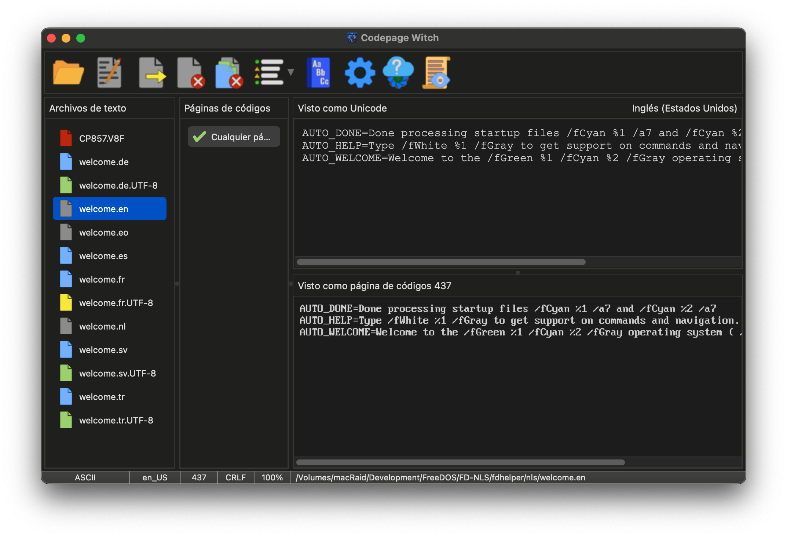

El Rostro de la Bruja: La ventana principal
La interfaz principal está diseñada para proporcionar un "Espejo" en tiempo real entre sus archivos de origen y su destino previsto. La Bruja utiliza un sistema de códigos de colores para comunicar el estado de sus archivos de un vistazo.

Los Conjuros: La Barra de Herramientas
La Barra de Herramientas es su principal fuente de magia. Alberga los hechizos para abrir archivos, exportar sus transmutaciones y acceder a los ajustes profundos.
 |
Abrir: Explore el sistema de archivos para seleccionar uno o más archivos. También puede usar Arrastrar y Soltar para lanzar archivos al caldero. |
 |
Editar: Lance el archivo seleccionado a su editor de texto externo preferido. |
 |
Exportar: Selle sus transmutaciones. Esto guarda el archivo usando la página de códigos y los finales de línea elegidos. |
 |
Cerrar: Destierre el archivo seleccionado del caldero. |
 |
Cerrar Todo: Limpie el caldero por completo, eliminando todos los archivos de la sesión. |
 |
Filtrar: Reduzca la lista de Encantamientos para mostrar solo coincidencias totales, potenciales o todas las páginas de códigos conocidas. |
 |
Diccionario: Consulte los diccionarios Maestro y de Usuario para ayudar a la Bruja a ampliar su vocabulario bilingüe. |
 |
Opciones: Observe la mecánica interna de la Bruja. Ajuste su apariencia, comportamiento y reglas automáticas. |
 |
Actualizador: Explore el horizonte digital en busca de nuevas versiones de la Codepage Witch. |
 |
Log: Abra el libro de contabilidad interno de la Bruja para ver informes de análisis detallados. |
El Caldero de Archivos: Los Iconos de Estado
A medida que se añaden archivos, el color del icono indica los hallazgos de la Bruja:
| El Análisis: El archivo se está procesando en segundo plano. | |
| Origen Unicode: Un archivo UTF-8. La Bruja ha mapeado sus mejores páginas de códigos. | |
| Origen Legado: Un archivo codificado por página de códigos. La Bruja usa análisis estadístico. | |
| ASCII Simple: Texto de 7 bits sin caracteres especiales. Seguro para cualquier conversión. | |
| El Presagio: Se ha detectado un error de formato (como la falta de una nueva línea final). | |
| El Vacío: Ha ocurrido un error de lectura o se trata de un archivo binario. |
Los Espejos Duales: Original vs. Transmutado
- Visor Unicode (Superior): Muestra el archivo como texto UTF-8 estándar.
- Visor de Codepage (Inferior): Renderiza el texto usando la página de códigos seleccionada.